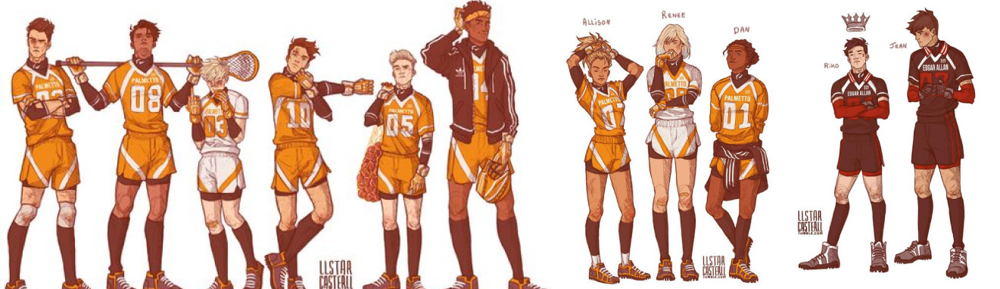

Трилогия, покорившая
многие сердца
Ваше следующее
«Собственная жизнь больше ему не принадлежит,
он отдает ее в руки Эндрю и надеется, что тот ее сбережет»
Герои
кевин
ники
эндрю
нил
аарон
мэтт
эллисон
рене
дэн
рико
жан
Трилогия повествует о команде "Лисов" - игроков экси (вымышленный спорт), которые, будучи отбросами в жизни, пытаются подняться со дна турнирной таблицы и выиграть чемпионат страны. Главный герой, Нил Джостен, пытается скрыться от своего темного прошлого, однако, став частью команды, вынужден сражаться не только с соперниками, но и с новоиспеченными товарищами, каждый из которых хранит свои секреты.
Оказавшись в Университете Пальметто, Нил Джостен знал, что не доживет до конца года, но теперь, когда смерть не за горами, он больше чем прежде хочет жить. Дружба с Лисами была опрометчивой затеей, а поцелуй с одним из них — затеей немыслимой. Пока «Лисы» пытаются во что бы то ни стало выйти в финал чемпионата, Нил сражается за свою жизнь, ведь теперь ей угрожает не только Рико Морияма, но и мафиозный клан Балтиморского Мясника. Правда — единственный шанс Нила на спасение, однако она может привести к гибели всех, кто ему дорог...

Оказавшись в Университете Пальметто, Нил Джостен знал, что не доживет до конца года, но теперь, когда смерть не за горами, он больше чем прежде хочет жить. Дружба с Лисами была опрометчивой затеей, а поцелуй с одним из них — затеей немыслимой. Пока «Лисы» пытаются во что бы то ни стало выйти в финал чемпионата, Нил сражается за свою жизнь, ведь теперь ей угрожает не только Рико Морияма, но и мафиозный клан Балтиморского Мясника. Правда — единственный шанс Нила на спасение, однако она может привести к гибели всех, кто ему дорог...